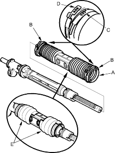
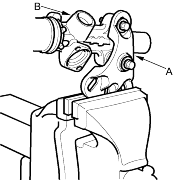
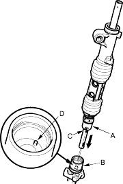
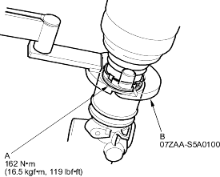

- Set the new boot bands (B) on the band installation grooves of the boot A by aligning the tabs (C) with the holes (D) of the band. Do not close the ear portion of the boot band in this step.

- Compress the boot A by hand, and apply vinyl tape (E) to the bellows so the boots stay collapsed and pulled back. Pass boot A over the cylinder so the smaller diameter end of the boot faces the gearbox housing.
- Attach the yoke (A) of a universal puller to the gearbox housing (B) with bolts, then securely clamp the yoke in a vice with jaws. Do not clamp the gearbox housing in a vice.

- Push the cylinder (A) into the gearbox housing (B) so the notch (C) is aligned with the pin (D) inside of the gearbox housing.

- Tighten the lock screw (A) by hand first, then set the special tool (B) on the lock screw securely. Tighten the lock screw to specified torque.

- Remove the special tool.